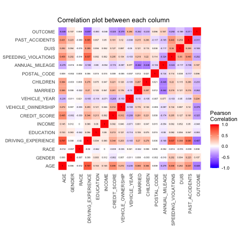

Car insurance claim
Presentation of the data and the associated insurance problem
The chosen data set is the Car Insurance Data from Kaggle. It is contains 19 columns and 10000 rows. The columns describe personal informations about the policyholder, like his/her ID number, age, gender, … Some of them are categorical (eg. Driving experiences and Race) and some numerical ones (eg. Credit score). However there is one column we would like to predict and that one is the column, which is named Outcome. The outcome is if the policyholder has claimed his/her loan or not. Many insurance companies offer many services than just insurance and lending money to someone is a very thoughtful task. Giving money to the wrong person can be a big loss depending on the amount loaned and the number of those “wrong” people since they will never give that money back. Hence it is also good to find a good model that can help the insurance company find who and who not lend money to.
Preliminary analysis of the data
Before we start talking model, we will need to take a closer look at the data.
First, we have to note that there is \(982\) missing data in the column of the credit score and \(957\) missing data in the column of the annual mileage. This issue has to dealt with later.
Then we plot the correlation plot between each column leaving the ID out since the ID will not be a feature for the prediction.

If we only the correlation values between the outcome column and all of the rest of the columns, we can get the columns with the most influence and with the least influence on the prediction. Those most influencing columns are the driving experience, vehicle ownership and credit score and the least influencing columns are race, age and education. We can forget about the 3 latter ones, but it is nice to visualize our data and this is what we are going to do.
Deal with the missing values
Furthermore, there a significant value of correlation between the outcome and both credit score and the annual mileage. The more logical next step is to fill the missing values in this 2 previous columns. For that there is an algorithm in R, call missForest.
Plots
Brief description of the models used
After the analysis, we splited the data into training and test. The training data is 80% of the whole data and the test data is the rest 20%. With the training data we train the model and with the test data we will evaluate how good our model is.
Machine Learning models don’t well on data which contain an imbalanced size of the predicting class. After balancing the data with a function in R, called upSample, the data set gets duplicated rows for the minority class.
The main task of the model is to do some classification prediction. So we will be able to pick the best performed model between three chosen model: Random Forest, Support Vector Machine and Naïve Bayes. We will explain shortly the models without going too much into details and then show their results.
Random Forest
The random forest algorithm is a collection of decision trees. One question one might ask now is what is a decision tree. The answer is: a decision tree is a tree where the nodes are the decisions and the edges are the tests. Those trees contain multiple levels at which one can do tests and decisions. Hence the random forest generates many trees based on different subsets of the training data with multiplication of the same rows. At the end, we will get one decision tree. The decisions will be chosen by majority vote for categorical and by the mean for continuous from the latter collection.
We train the random forest algorithm with our train data. Next we predict the same training data and evaluate this prediction.
Support Vector Machine
The support vector machine, also named SVM, is another algorithm for classification. It tries to generate a line that separates the two predicting classes when drawn in a hyperplane.
We train the SVM algorithm with our train data. Next we predict the same training data and evaluate this prediction.
Naïve Bayes
First note that the Naïve Bayes algorithm assumes independence between all of features. It calculates the posterior probabilities using the Bayes Theorem for each outcome class. Then it predicts the class such that this probabilities is the largest.
We train the Naïve Bayes algorithm with our train data. Next we predict the same training data and evaluate this prediction.
Analysis of the results and conclusion
As expected, the random forest algorithm has the best accuracy. Thus it will be the algorithm which we will perform a cross-validation with 5-folds. K-Fold Cross-validation splits the training data into K subsets. At each iteration it evaluates the model at each different different subset after the model trained on the other 4 subsets. Each model created can have very different value for each parameter. The model with again the largest accuracy “wins”.
We are ready now to evaluate the final model on the test data. This is the following result: